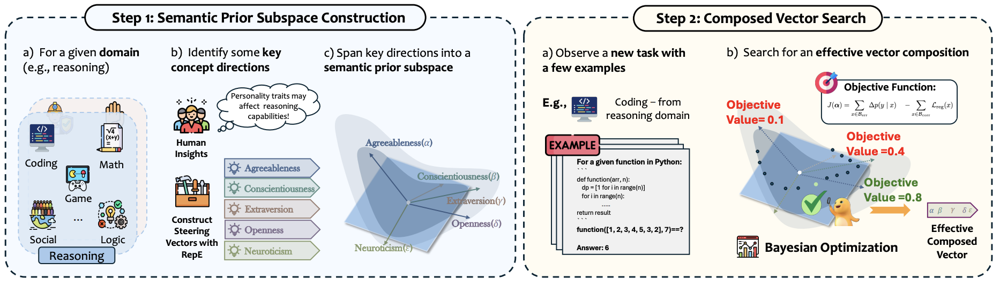
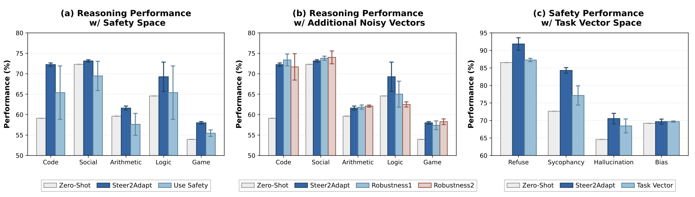
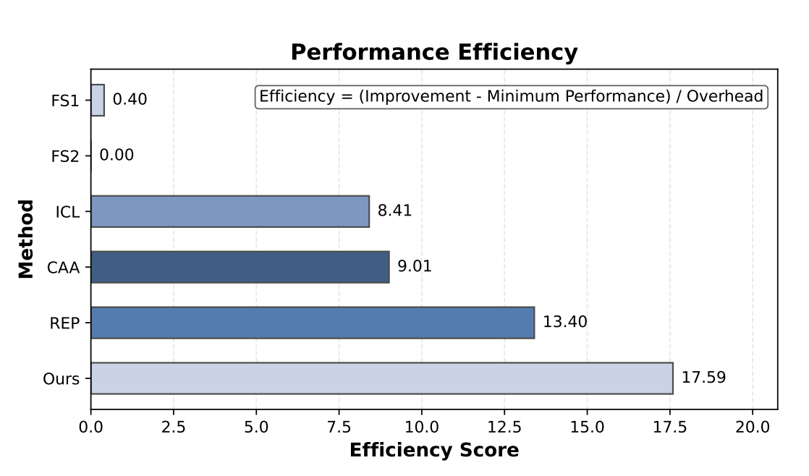
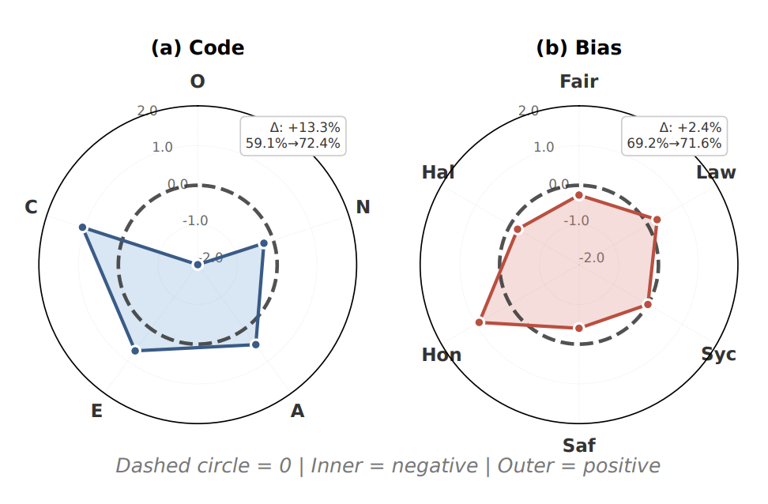

Abstract
Activation steering has emerged as a promising approach for efficiently adapting large language models (LLMs) to downstream behaviors. However, most existing steering methods rely on a single static direction per task or concept, making them inflexible under task variation and inadequate for complex tasks that require multiple coordinated capabilities. To address this limitation, we propose STEER2ADAPT, a lightweight framework that adapts LLMs by composing steering vectors rather than learning new ones from scratch. In many domains (e.g., reasoning or safety), tasks share a small set of underlying concept dimensions. STEER2ADAPT captures these dimensions as a reusable, low-dimensional semantic prior subspace, and adapts to new tasks by dynamically discovering a linear combination of basis vectors from only a handful of examples. Experiments across 9 tasks and 3 models in both reasoning and safety domains demonstrate the effectiveness of STEER2ADAPT, achieving an average improvement of 8.2%. Extensive analyses further show that STEER2ADAPT is a data-efficient, stable, and transparent inference-time adaptation method for LLMs.
Method: Why compose steering vectors instead of learning new ones?

STEER2ADAPT operates in three steps:
(1) Semantic Prior Subspace Construction: We collect a small set of domain-level concept vectors as reusable basis directions that span the behavioral space of a given domain.
(2) Coefficient Search via Bayesian Optimization: Given a new downstream task and only a handful of examples, we use Bayesian optimization with a stability-aware objective to efficiently search for the optimal linear combination of basis vectors.
(3) Inference-Time Steering: The composed steering vector is injected into the LLM's activations at inference time, adapting the model's behavior without any parameter updates.
This formulation turns adaptation into a lightweight search over a shared subspace — no retraining, no new vectors, just a new recipe.
Additional Analysis:

STEER2ADAPT depends on basis direction relevance and is robust to moderate subspace noise. (a) Steering reasoning with a mismatched subspace (safety directions) causes large performance drops and higher variance. (b) Adding a small number of less relevant directions to the reasoning subspace leads to only minor performance changes. (c) Task vectors from relevant tasks can form an effective steering subspace with performance comparable to semantic subspaces.

STEER2ADAPT achieves the best performance–efficiency trade-off. We report an efficiency score that measures the gain in task performance per unit of inference cost, computed as Efficiency = (Improvement − Minimum Performance)/Inference Overhead.

Transparent basis combinations in STEER2ADAPT. Left: Coding gains align with structured reasoning traits. Right: Safety objectives exhibit entangled, non-uniform trade-offs.
BibTeX
@article{han2026steer2adapt,
title={Steer2Adapt: Dynamically Composing Steering Vectors Elicits Efficient Adaptation of LLMs},
author={Han, Pengrui and Xu, Xueqiang and Xuan, Keyang and Song, Peiyang and Ouyang, Siru and Tian, Runchu and Jiang, Yuqing and Qian, Cheng and Jiang, Pengcheng and Sun, Jiashuo and others},
journal={arXiv preprint arXiv:2602.07276},
year={2026}
}